먼저 생각해 보세요.
Wir sind nach Berlin gefahren. 지난 일을 말하는데 haben 대신 무엇을 썼나요?
fahren, gehen처럼 한 곳에서 다른 곳으로 움직이는 동사는 haben 대신 sein과 함께 써요.
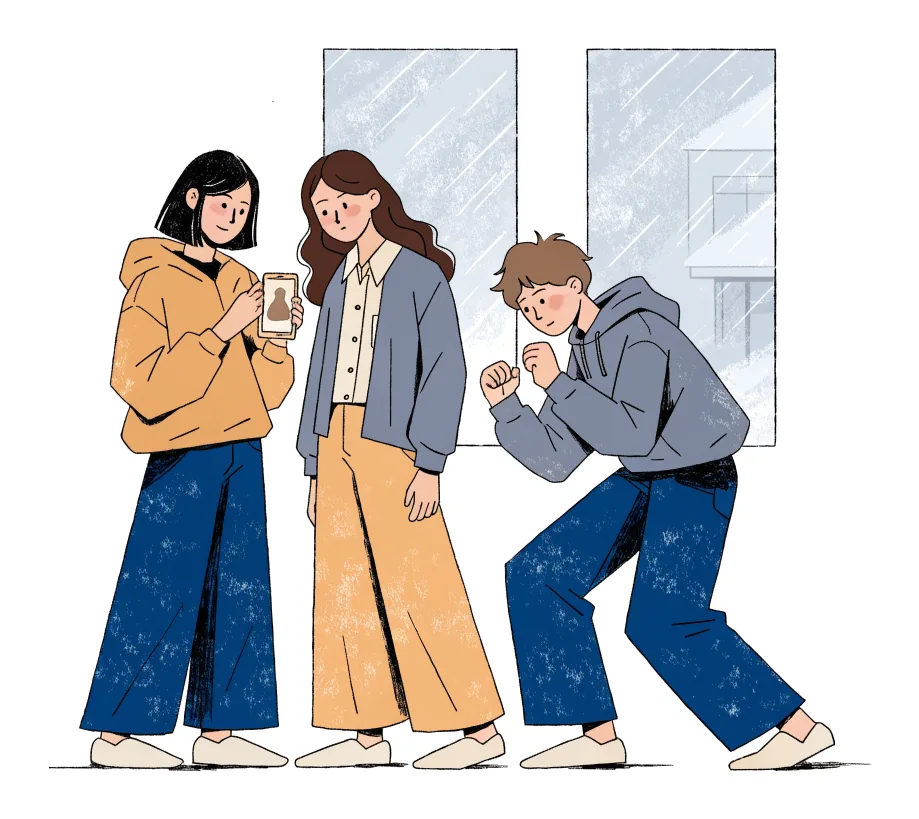
1월이에요. 겨울 방학이 끝나고 친구들이 다시 만났어요. 방학에 어디에 갔는지 이야기해요.
눌러서 들어 보세요.
먼저 생각해 보세요.
Wir sind nach Berlin gefahren. 지난 일을 말하는데 haben 대신 무엇을 썼나요?
fahren, gehen처럼 한 곳에서 다른 곳으로 움직이는 동사는 haben 대신 sein과 함께 써요.
Lektion 6의 낱말 다섯 개를 다시 떠올려 보세요.
문법 Perfekt mit sein, Wohin? nach, in, an (ans Meer), im Juli, im Sommer
이 과를 마치면 여행 간 곳과 날씨를 말하고, 엽서를 쓸 수 있어요.
겨울 방학이 끝난 첫날 아침, 학교 복도예요.
들으면서 찾아보세요. Yuna는 방학에 어디에 갔나요?
Lukas도 왔어요. 여행 이야기가 이어져요.
들으면서 찾아보세요. Lukas는 방학에 무엇을 했나요?
두 대화를 듣고 답하세요.
Yuna는 방학에 어디에 갔나요?
Yuna und Emma sind mit dem Auto gefahren.
Mit dem Zug. 기차를 타고 갔어요.
Wie war das Wetter in Berlin?
Elif ist in den Ferien zu Hause geblieben.
Lukas는 방학에 무엇을 했나요?
Elif는 여름에 어디에 갔나요?
낱말 23개예요. 낱말이나 예문 앞의 단추를 누르면 소리가 나요. 명사는 der, die, das를 색으로 구분했어요.
fahren, ist gefahren (타고) 가다
Wir sind nach Berlin gefahren.우리는 베를린에 갔어요.
gehen, ist gegangen 가다, 걷다
Ich bin ins Museum gegangen.나는 박물관에 갔어요.
fliegen, ist geflogen 비행기를 타고 가다
Elif ist in die Türkei geflogen.Elif는 튀르키예에 갔어요.
kommen, ist gekommen 오다
Lukas ist spät gekommen.Lukas는 늦게 왔어요.
bleiben, ist geblieben 머무르다
Ich bin zu Hause geblieben.나는 집에 있었어요.
schwimmen, ist geschwommen 수영하다
Ich bin im Meer geschwommen.나는 바다에서 수영했어요.
aufstehen, ist aufgestanden 일어나다
Ich bin früh aufgestanden.나는 일찍 일어났어요.
die Ferien (Pl.) 방학
Wie waren die Ferien?방학 어땠어?
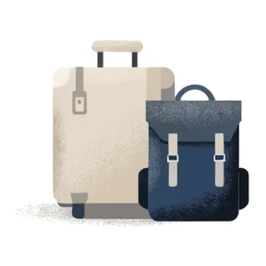
die Reise, die Reisen 여행
Die Reise war toll.여행은 좋았어요.
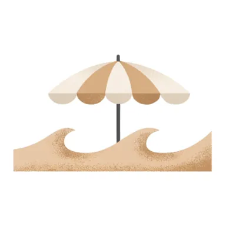
das Meer, die Meere 바다
Ich fahre lieber ans Meer.나는 바다에 가는 게 더 좋아요.
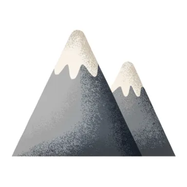
der Berg, die Berge 산
Die Berge sind schön.산이 아름다워요.
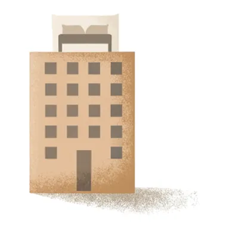
das Hotel, die Hotels 호텔
Das Hotel war klein.호텔은 작았어요.
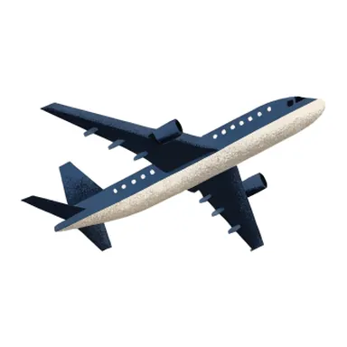
das Flugzeug, die Flugzeuge 비행기
Wir fliegen mit dem Flugzeug.우리는 비행기를 타고 가요.
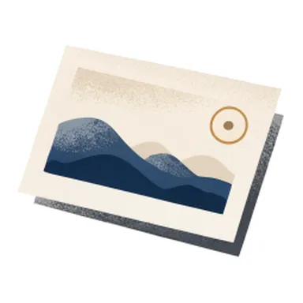
die Postkarte, die Postkarten 엽서
Ich schreibe eine Postkarte.나는 엽서를 써요.
das Foto, die Fotos 사진
Wir haben viele Fotos gemacht.우리는 사진을 많이 찍었어요.
schreiben, hat geschrieben 쓰다
Ich habe eine Postkarte geschrieben.나는 엽서를 썼어요.
das Wetter 날씨
Wie war das Wetter?날씨 어땠어?
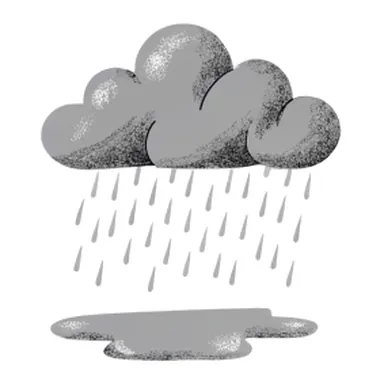
regnen, hat geregnet 비가 오다
Gestern hat es geregnet.어제 비가 왔어요.
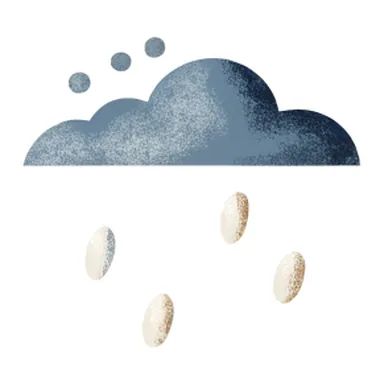
schneien, hat geschneit 눈이 오다
Es hat geschneit!눈이 왔어요!
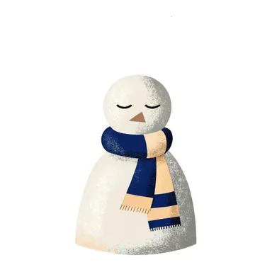
der Schnee 눈
Der Schnee war so schön.눈이 정말 예뻤어요.
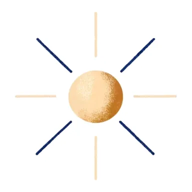
sonnig 화창한
Heute ist es sonnig.오늘은 화창해요.
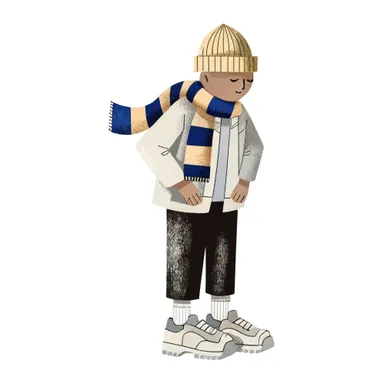
kalt 추운, 차가운
Es war sehr kalt.아주 추웠어요.
heiß 더운, 뜨거운
Im Sommer ist es heiß.여름에는 더워요.
이 과의 낱말로 여덟 문제를 풀어요.
계절 이름도 모두 der 명사예요. 줄을 누르면 소리가 나요.
예문을 보고 답해 보세요.
fahren, gehen, fliegen은 어떤 동사인가요?
규칙
한 곳에서 다른 곳으로 움직이는 동사(fahren, gehen, fliegen, kommen, schwimmen)와 aufstehen은 haben 대신 sein과 함께 지난 일을 말해요. bleiben도 sein을 써요. 과거분사는 대부분 -en으로 끝나요.
| 동사 | 과거분사 | 예문 |
|---|---|---|
| fahren | ist gefahren | Wir sind nach Berlin gefahren. |
| gehen | ist gegangen | Ich bin ins Museum gegangen. |
| fliegen | ist geflogen | Elif ist in die Türkei geflogen. |
| kommen | ist gekommen | Lukas ist spät gekommen. |
| bleiben | ist geblieben | Ich bin zu Hause geblieben. |
| schwimmen | ist geschwommen | Sie ist im Meer geschwommen. |
| aufstehen | ist aufgestanden | Er ist früh aufgestanden. |
주의 대부분의 동사는 haben과 함께 써요. sein을 쓰는 동사는 많지 않으니 위의 일곱 개를 먼저 외워 두세요. Ich habe Fotos gemacht. Ich bin nach Berlin gefahren.
예문을 보고 답해 보세요.
도시 이름 Berlin 앞에는 무엇을 썼나요?
규칙
어디로 가는지(Wohin?) 말할 때, 도시와 대부분의 나라 이름 앞에는 nach를 써요. 건물이나 장소 안으로 갈 때는 in을 쓰고 뒤의 관사는 4격이에요. in das는 ins로 줄여요. 바닷가로 갈 때는 an das를 줄인 ans를 써요.
| 어디로? | 예 |
|---|---|
| 도시, 나라 | nach Berlin, nach Korea, nach Österreich |
| 건물, 장소 | ins Kino, ins Museum, in die Schule, in die Stadt |
| 산 | in die Berge |
| 바다 | ans Meer |
| 집 | nach Hause |
주의 die Schweiz, die Türkei처럼 die가 붙는 나라는 in die를 써요. 어디에 있었는지(Wo?) 말할 때는 3격을 써요. Ich war in Berlin, im Museum, am Meer.
예문을 보고 답해 보세요.
달과 계절 앞에는 무엇을 썼나요?
규칙
달과 계절 앞에는 im을 써요. 요일과 날짜, 하루의 때 앞에는 am을, 시각 앞에는 um을 써요.
| 언제? | 앞에 오는 말 | 예 |
|---|---|---|
| 시각 | um | um acht Uhr |
| 요일, 날짜, 하루의 때 | am | am Montag, am ersten Mai, am Abend |
| 달, 계절 | im | im Juli, im Sommer |
주의 '방학에'는 in den Ferien이라고 해요. 통째로 외워 두세요.
Sabine가 베를린 여행을 이야기해요. 듣고 답하세요.
Vier Tage in Berlin
Sabine In den Ferien sind wir nach Berlin gefahren. Wir sind vier Tage geblieben.
Sabine Das Hotel war klein, aber gemütlich.
Sabine Am Montag sind wir ins Museum gegangen. Am Dienstag haben wir eingekauft.
Sabine Es war sehr kalt und am Mittwoch hat es geschneit.
Sabine Am Donnerstag sind wir zurückgekommen.
Familie Wagner는 베를린에 며칠 있었나요?
Wie war das Hotel?
Was hat die Familie am Dienstag gemacht?
눈이 온 날은 언제인가요?
듣고 날씨를 고르세요.
날씨가 어떤가요?
Es regnet.
날씨가 어떤가요?
Es ist sonnig und heiß.
어제 날씨는 어땠나요?
Gestern hat es geschneit.
겨울 날씨는 어떤가요?
Im Winter ist es kalt.
Elif가 여름에 Emma에게 보낸 엽서예요. 읽고 답하세요.
Postkarte aus der Türkei
Liebe Emma,
viele Grüße aus der Türkei! Wir sind am Samstag nach Izmir geflogen.
Das Wetter ist super. Es ist sonnig und heiß. Ich bin jeden Tag im Meer geschwommen.
Gestern haben wir meine Großeltern besucht. Meine Oma hat sehr viel gekocht!
Am Freitag kommen wir zurück.
Bis bald! Deine Elif
Elif ist mit dem Zug in die Türkei gefahren.
Wir sind nach Izmir geflogen. 비행기를 타고 갔어요.
Wie ist das Wetter?
Was hat Elif jeden Tag gemacht?
Elif는 언제 돌아오나요?
sein과 haben 가운데 알맞은 것을 고르세요.
Ich nach Berlin gefahren.
Wir viele Fotos gemacht.
Elif in die Türkei geflogen.
Lukas eine Postkarte geschrieben.
Ich zu Hause geblieben.
Wir ins Museum gegangen.
Es geschneit.
알맞은 과거분사를 고르세요.
Wir sind nach Köln .
Ich bin ins Kino .
Sie ist im Meer .
Er ist früh .
Ich bin zu Hause .
Elif ist nach Izmir .
어디로 가는지에 맞는 말을 고르세요.
Wir fahren Berlin.
Im Sommer fahren wir Meer.
Lukas fährt Berge.
Ich gehe Museum.
Yuna fliegt im Sommer Korea.
Elif fliegt Türkei.
im, am, um 가운데 알맞은 말을 고르세요.
Sommer ist es heiß.
Montag haben wir Mathe.
acht Uhr fängt die Schule an.
Juli fahren wir ans Meer.
ersten Februar hat Emma Geburtstag.
날씨와 계절을 뜻과 짝지으세요.
낱말을 순서대로 눌러 문장을 만드세요.
우리는 베를린에 갔어.
나는 집에 있었어.
여름에 우리는 바다에 갔어.
날씨 어땠어?
듣고 그대로 써 보세요.
Wie waren die Ferien? 방학 어땠어?
Wir sind nach Berlin gefahren. 우리는 베를린에 갔어.
Es war sehr kalt. 아주 추웠어.
Wie waren die Ferien? 방학 어땠어?
Wo warst du? 어디 있었어?
Wie war das Wetter? 날씨 어땠어?
Ich bin nach Berlin gefahren. 베를린에 갔어.
Wir sind ans Meer gefahren. 우리는 바다에 갔어.
Ich bin zu Hause geblieben. 집에 있었어.
Es war sonnig. 화창했어.
Es war kalt. / Es war heiß. 추웠어. / 더웠어.
Es hat geregnet. / Es hat geschneit. 비가 왔어. / 눈이 왔어.
Liebe Emma, / Lieber Lukas, Emma에게, / Lukas에게,
Viele Grüße aus Berlin! 베를린에서 안부를 전해!
Bis bald! 곧 만나!
대화 A에서 역할을 하나 고르세요. 상대의 말은 음성으로 나오고, 내 차례에는 직접 말해요.
언제, 어디에 갔는지와 날씨를 적으세요. 완성된 문장을 소리 내어 읽어 보세요.
Im Sommer bin ich nach Busan gefahren.
Das Wetter war sonnig und heiß.
Die Reise war toll!
Eine Postkarte
여행지에서 친구에게 엽서를 써 보세요. 다녀온 곳이 없으면 가고 싶은 곳을 골라 다녀온 것처럼 써요.
Lieber Lukas, viele Grüße aus Busan! Wir sind am Montag nach Busan gefahren. Das Wetter ist super. Es ist sonnig und warm. Gestern bin ich im Meer geschwommen und ich habe viel Fisch gegessen. Am Sonntag kommen wir zurück. Bis bald! Deine Yuna
다 쓴 뒤에 확인해 보세요.
Ich kann über eine Reise sprechen.여행에 대해 말할 수 있어요.
Ich kann über das Wetter sprechen.날씨를 말할 수 있어요.
Ich kann eine Postkarte schreiben.엽서를 쓸 수 있어요.